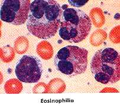

BIOLOGICAL ESSENCE OF ANAPHYLAXIS: AN IMPERFECT DEFENSE
Before we close the discussion of type I hypersensibility, it should be noted than the IgE antibodies are not wrong and evil ones. They may play a protective role in several parasitic infections and pivotal role in placentation process.
According to the concepts, stated by A.B. Kay and R. Nezlin (1983, 1987), anaphylaxis is a kind of fee, taken by evolution for the increase of anti-helminthic resistance in Mammals and Aves. It has been invented in phylogenesis much later than other kinds of immunity. Only placental mammals and birds possess with reaginic antibodies and have morphologically well differentiated eosinophils. Hyperergic inflammation, organized by these anaphylactic effectors, hits parasites and their larvae much more effectively, than normergic one, because of antigenic mimicry and other mechanisms, allowing to bypass the normal immune surveillance. It has been shown, that anaphylactic reactors are less prone to infestation and, vice versa, infestation provokes IgE biosynthesis even in persons, previously not predisposed to anaphylaxis (see above “Immunity against parasites”).
Large amounts of IgE antibodies are regularly produced in response to many helminthic infections. It should be noted that shed (soluble) antigens of parasite penetrate into regional lymph node and trigger the activity of Th2 and IgE production by B-cells there. Mast cells and basophils migrate from gut mucosa into lymph nodes and acquire their surface reaginic antibodies. Returning to the site of invasion, they trigger local hyperergic inflammation and attract to the parasite eosinophils, platelets and macrophages. The recruited cells and liberated autocoids render the anti-parasitic effects. Frustrated phagocytosis with release of toxic oxygen metabolites and lysosomal enzymes and toxic action of eosinophilic proteins hyperbolize the peri-worm inflammation.

The relation between helminthiases and anaphylaxis via IgE-dependent eosinophilic reactions has not only theoretical biological, but also practical medical significance – for differential diagnosis of bronchial asthma. The essential part in origin of asthmatic phenomena is played by Larvae Migration Syndrome (LMS). It is especially actual for youngest children, with their bad habit of geophagia, and in senior patients, with their decreased immunity. Although mature forms of Toxocarae (dog and cat’s parasitic nematodes) are not able to persist in human organism, their larvae may get into patient’s body and migrate there transitory, passing through bronchi. Larval form of human parasite Ascaris hominis, as well as some tropical Filariae, also migrates through bronchi. During migration, larvae provoke IgE-dependent anaphylactic eosinophilic bronchitis, very similar in manifestation to classic atopic bronchial asthma. For the purposes of differentiation it is worth to remind that immature larvae do not produce eggs, so the traditional test of visual worm eggs location in feces, verifying the diagnosis of helminthiasis, in LMS can be false-negative and not helpful for disease recognition. The late anaphylactic reaction in LMS is of persistent character. That’s why, in difference with atopic bronchial asthma, characterized by clear lung images on X-ray, LMS patients display flighty eosinophilic lung infiltrates, dynamically changing their shape and location. Blood eosinophilia in LMS is high and constant, unlike the fluctuating character of blood eosinophil level in classic atopic asthma (patient may be eosinopenic after asthmatic attack and eosinophilic before). A variant of LMS in elderly patients is Harkavi’s syndrome, previously thought to be a form of true bronchial asthma. In strongiloidosis and ankylostomidosis the creeping itching skin rash has similar pathogenesis. Before broad inculcation of antibiotics in medical practice, many common bacterial infections (scarlet fever, pneumococcal pneumonia, Haemophilus influenzae) also gave prominent eosinophilia during final recovery stage. This may witness that bacteria also possess with some epitopes, shared with helminthes and triggering the system of anaphylactic response. So, from phylogenetic point of view, anaphylactic allergy (e.g. pollinosis) may be interpreted as a result of immune system mistakes, confusing similar or identical epitopes of parasites and non-infectious exo-allergens.Another aspect of anaphylaxis biological significance is of tight relation with Obstetrics. According J. Horton and N. Ratcliffe (1994) only placental Mammals produce IgE. During pregnancy the titers of reaginic antibodies always rise up.
The pregnancy is a phenomenon, surrounded in human culture and arts with high humanistic sentiment and life-asserting pathos. The inertia of this common anthropocentric attitude spreads also on medicine and replaces, to some extent, the professional approach to the problem of maternal-fetal immune intercommunication.
For a long time it was believed, that normal pattern of this interrelationship is characterized by absolute absence of any hostility between mother and fetus. But, this hypothesis was based, mostly on our emotional attitude to the problem: we thought that it should be harmonic and devoid of any conflicts, because of the image of Leonardo’s Madonna, staying deep in our consciousness.
But, pregnancy has also biological side, and this side is prosaic rather than poetical.
A fetus is a graft, containing paternal antigens, alien for maternal body. Although we risk to be accused for medical cynicism, it is possible to indicate many common features in maternal response to fetus and immune response for macroparasites. It is highly probable, that the mechanisms of pregnancy phylogenetically were constructed on the basis of anti-parasitic immunity stereotypes, modified by placental Mammals.
The maternal organism needs some mechanisms capable of establishing selective reduction of immune attack against antigens of the embryo. The parthenogenetic development of the zygote in humans is principally possible, but breaks at the moment, when placentation is to be achieved. Placentation is insufficient in fetus begot by inbred couples, as well as in very close paternal and maternal MHC haplotypes.
These data witness for necessity of moderate antigenic alienation between fetus and mother for controlled immunologic conflict of these organisms. The conflict proceeds according to the mechanisms of host-parasite relations and triggers the process of placentation. The anaphylactic reaction of maternal and fetal organisms is important for placentation, which may be regarded as phylogenetic modification of productive inflammation. One of the simplest ways to achieve relative tolerance to fetus is hiding of embryonic antigens. Placenta constitutes a shield, capturing some kinds of maternal antibodies and forming immune complexes. The embryo grows under the conditions favorable for anaphylaxis:
- The womb, initially reach with mast cells and macrophages, acquires plenty of mastocytes and macrophages during early pregnancy. Mast cells are especially abundant around the embryo.
- Placenta secretes histamine and cytokines, typical for anaphylaxis into maternal circulation.
- On the border between mother and fetus anaphylactic reactions occur, causing microthrombosis and fibrin deposition, hiding embryonic antigens from maternal immune attack.
From this point of view, anaphylactic allergy is a glitch in the work of the system, designated for hiding of embryonic antigens and creation of placental barrier. Reaginic antibody production is started by wrong signals (alien allergens).
The relations of host and tumor display something common with these mechanisms. As early as in 1879 P. Ehrlich has noticed the cumulating of mast cells around tumors. On the borderline of tumor anaphylactic and immune complex reactions take place, causing microthrombosis and shielding of tumor antigens, accepted by organism as embryonic ones. Moreover, the increase in mast cell number around a neoplasm may accelerate tumor growth.
Thus, anaphylaxis looks like a physiological phenomenon, playing the part of two-edged sword. Due to its naturally imperfect character, in some situation tissue damage caused by anaphylaxis is not balanced by its defensive benefits.
NEXT CHAPTER
OR